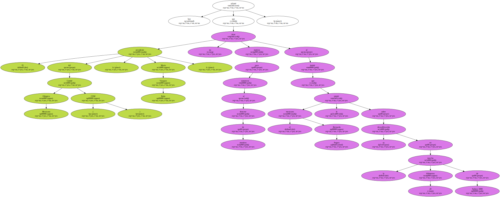
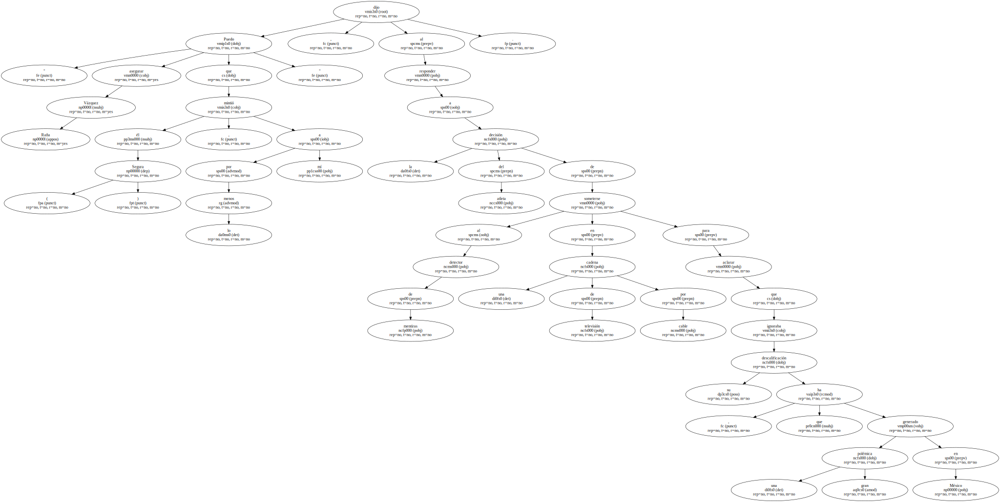
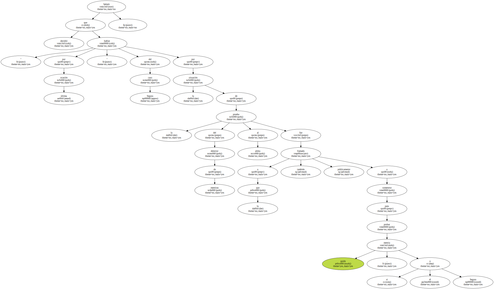
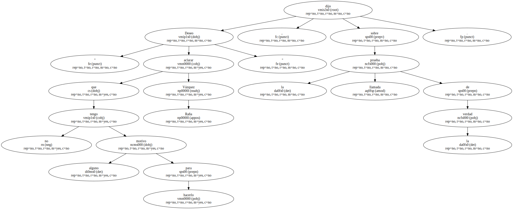
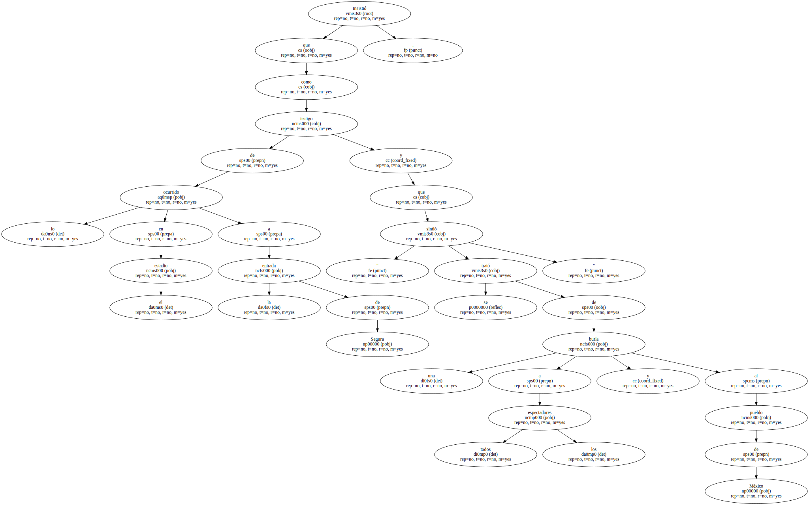
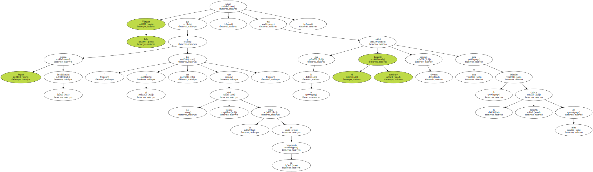
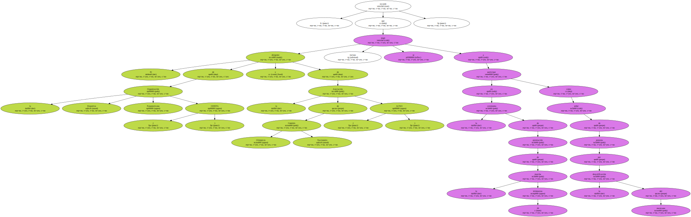
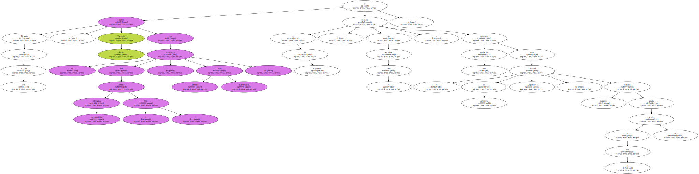
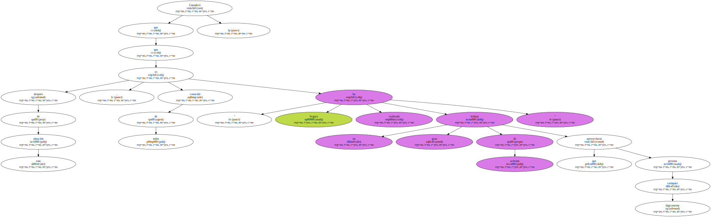

El presidente del Comité Olímpico Mexicano ( COM ) , Mario Vázquez Raña , afirmó hoy que no tiene motivos para someterse al detector de mentiras al insistir que el mexicano Bernardo Segura le mintió sobre su descalificación en la marcha 20 kilómetros de Sydney`2000.
" Puedo asegurar que él ( Segura ) mintió , por lo menos a mí " , dijo Vázquez Raña al responder a la decisión del atleta de someterse al detector de mentiras en una cadena de televisión por cable para aclarar que ignoraba su descalificación , que ha generado una gran polémica en México.
Señaló que decidió " hablar por última ocasión " del caso Segura por la situación de la prueba del detector de mentiras al atleta a la que también fue llamado públicamente a someterse para probar quién mentía , si él o Segura.
" Deseo aclarar que no tengo motivo alguno para hacerlo " , dijo Vázquez Raña sobre la llamada prueba de la verdad.
Insistió que como testigo de lo ocurrido en el estadio a la entrada de Segura y " sintió que se trató de una burla a todos los espectadores y al pueblo de México ".
Vázquez Raña reiteró que Segura conocía su descalificación " y a mí me dijo que no había violado las reglas de su competencia " , tras de lo cual el dirigente mexicano realizó diversas acciones para tratar de defender la presunta victoria del atleta.
El dirigente de la Organización Deportiva Panamericana ( ODEPA ) y de la Asociación de Comités Olímpicos Nacionales ( ACNO ) , recordó que incluso se negó a participar en la ceremonia de premiación de la marcha 20 kilómetros como señal de protesta por la descalificación del mexicano.
Después de esa acción , Vazquez Raña habló con el presidente del Comité Olímpico Internacional ( COI ) , Juan Antonio Samaranch , y al día siguiente , tras estudiar el caso , decidió presentar una apelación ante el Tribunal de Arbitraje Deportivo , máxima instancia a la que se podía acudir.
Pero cuando se empezaban los trámites , Bernardo Segura ya había comenzado su regreso a México , en donde fue localizado para que Vázquez Raña le preguntara si aceptaba el trámite y sobre la decisión de los jueces.

" Volví a preguntarle si no había infringido las reglas de manera que mereciera la descalificación , el señor Segura contestó que estaba cierto de no haberlas violado " , precisó el dirigente mexicano.

Consideró que después de esta situación , es de todos conocido que " Segura ha realizado un gran trabajo de activista que lógicamente cualquier persona aprovecharía ".
Segura es miembro del centro izquierdista Partido de la Revolución Democrática ( PRD ) que le ha hecho diversos homenajes , entre ellos un reconocimiento de la alcaldesa de la Ciudad de México , que lanzó duras críticas contra los dirigentes deportivos que no defendieron su triunfo en Sydney.